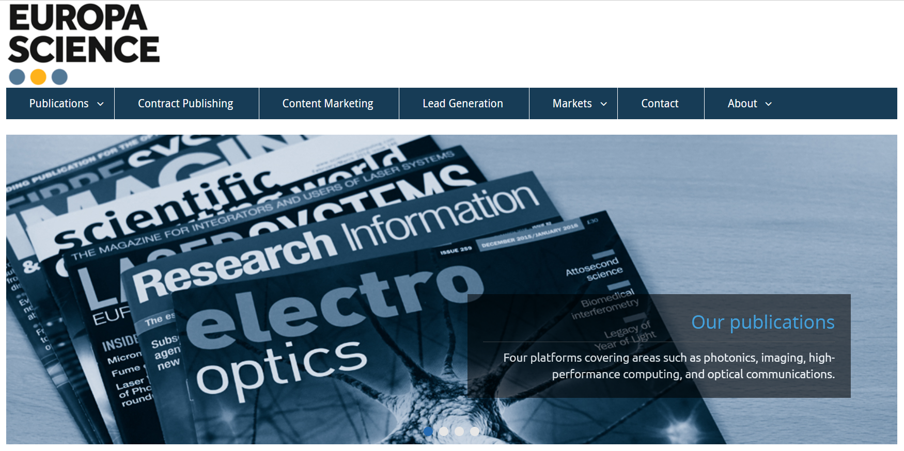
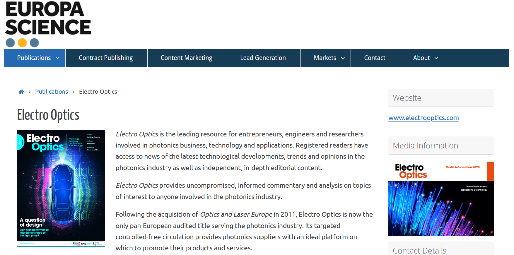
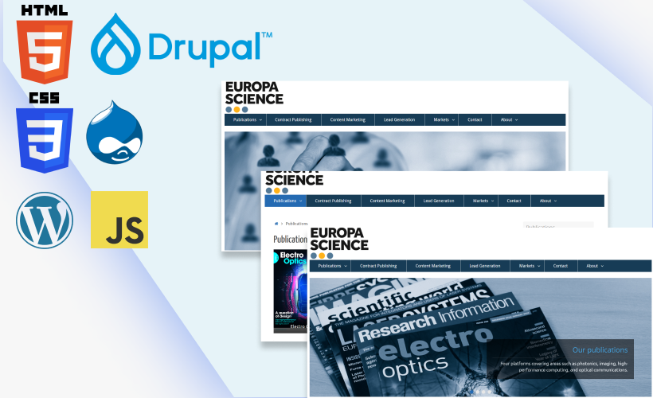
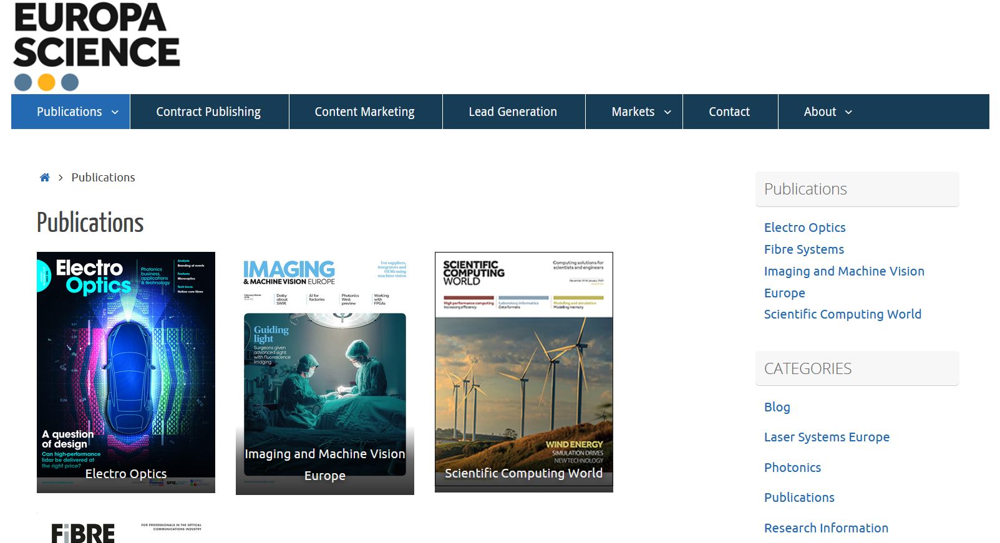

This is a ready-to-print page
Europa Science Group
Web design and marketing
Europa Science Group is a specialist publishing company focused on scientific and technological sectors, delivering industry insight, research developments, and expert perspectives through a portfolio of magazines and digital platforms.
Over time, the company expanded through acquisitions and new launches, building a strong presence across photonics, imaging, scientific computing, and optical communications. Alongside publishing, Europa Science also developed broader marketing and community-building services, supporting specialist audiences through content, digital platforms, and targeted communications.

Europa Science publishing company website
Source image: Europa Science
The challenge
The challenge was to maintain and improve digital experiences for a specialist publishing business serving multiple technical industries, while ensuring the websites remained accessible, standards-compliant, and effective in communicating complex content clearly.
This involved balancing editorial, technical, and marketing needs across websites and campaigns, while working with platforms such as Drupal and WordPress and technologies including HTML, CSS, PHP, and JavaScript. The work also needed to support consistency across digital touchpoints and ensure that communications felt clear, credible, and aligned with the brand.

Europa Science publishing company website
Source image: Europa Science
My role
I worked primarily as a web designer, with additional graphic design responsibilities focused on email marketing, expert blogs, and thought leadership content. My role included creating and updating websites, supporting campaign delivery, and ensuring digital outputs were both visually clear and technically sound.
I developed accessible, standards-compliant websites aligned with W3C guidelines, using HTML, CSS, PHP, JavaScript, WordPress, and Drupal. Alongside website work, I designed and built email campaigns that supported marketing and editorial objectives while maintaining a strong visual standard across communications.

Applications utilised at Europa Science: Drupal, PHP, HTML, CSS, JavaScript, and WordPress to develop and maintain websites, as well as to create and manage email campaigns.
Source images: Europa Science, Wikipedia
Process and approach
My approach focused on combining design clarity with technical practicality. For web projects, this meant creating and updating pages that were accessible, standards-compliant, and structured to support readability, usability, and clear navigation across specialist content.
Working with Drupal, WordPress, HTML, CSS, PHP, and JavaScript, I supported the ongoing evolution of the company’s websites while ensuring that layouts, content presentation, and interactions remained functional and user-friendly. At the same time, I created email campaigns and supporting graphic assets that extended the brand across marketing communications and editorial content.
Because Europa Science operated in technical and content-rich sectors, the work required attention to detail, consistency, and an ability to make specialist information feel more approachable and visually digestible for readers and industry audiences.

Europa Science publishing company website and some of the magazines they produce
Source image: Europa Science
My contribution
My contribution focused on improving the clarity, accessibility, and consistency of Europa Science’s digital presence across websites and email communications. I helped create online experiences that were visually clean, technically robust, and aligned with recognised web standards.
By combining web design with front-end implementation and digital campaign support, I contributed to a more coherent and effective online presence for a specialist publishing brand. My work helped make content easier to navigate, communications more polished, and digital outputs better suited to the needs of both the business and its expert audiences.